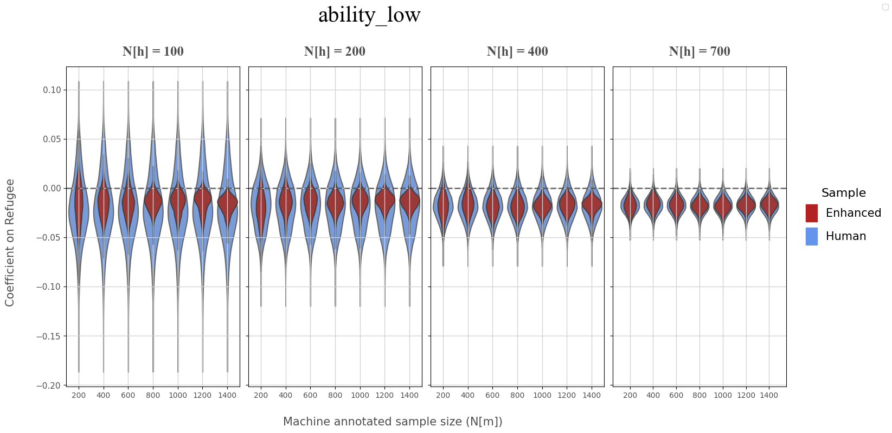
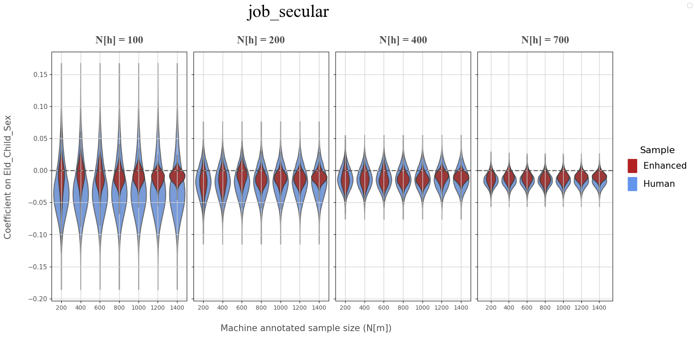

Distribution of Regression Coefficients
Contents
Distribution of Regression Coefficients#
Imports#
import os
import numpy as np
import pandas as pd
from iqual import tests
Load datasets#
data_dir = "../../data"
### Qualitative data (Enhanced Data with progressive k-fold bootstrap)
bootstrap_df = pd.read_csv(os.path.join(data_dir,"enhanced_bootstrap_kfold.csv"))
### Quantitative data
quant_df = pd.read_csv(os.path.join(data_dir,"quant_data.csv"))
Variables#
annotation_vars = ["ability_low","job_secular"]
id_vars = ['uid','split','data_round','refugee','bootstrap_run','train_sample_size']
Enhanced Bootstrap Dataframe (Merged with quantiative data)#
bootstrap_df = bootstrap_df[[*id_vars,*annotation_vars]].copy()
bootstrap_df = pd.merge(bootstrap_df,quant_df,on=['uid','data_round','refugee'],how='left')
Regression Configuration#
# Numerical regressors (Continuous/Dummy variables)
numerical_vars = [
'refugee',"int_sex", "int_age",
'hh_head_sex',
'eld_sex',
'parent_reledu',
'num_child',
'hh_head_age',
'parent_eduyears',
'eld_age',
'hh_asset_index',
'hh_income',
'int_trauma_exp',
]
import itertools
HUMAN_SIZES = [100, 200, 400, 700]
MACHINE_SIZES = [200, 400, 600, 800, 1000, 1200, 1400]
BOOTSTRAP_RUNS = [1, 2, 3, 4, 5, 6, 7, 8, 9, 10]
N_DRAWS = 5000
coefs = []
random_draws = np.random.normal(size=N_DRAWS)
for ANNOTATION, REGRESSOR in [('job_secular','eld_sex'),('ability_low','refugee')]:
for h, r, m in itertools.product(HUMAN_SIZES, BOOTSTRAP_RUNS, MACHINE_SIZES):
print("\r...| ","Bootstrap Run:",r,"Human:",h,"Machine:",m,sep=' ',end=' | ...')
df = bootstrap_df[(bootstrap_df['train_sample_size']==h) & (bootstrap_df['bootstrap_run']==r)]
# Separate human and machine data
human_df = df[df.split == 'train']
# Sample machine data
machine_df = df[df.split != 'train'].sample(m)
# Concatenate human and machine data for enhanced data
enh_df = pd.concat([human_df, machine_df])
# Run regression on human
human_model = tests.Interpretability(human_df,annotation_vars=[ANNOTATION],numerical_regressors=numerical_vars).fit_all()
# Human model coefficient and standard error
human_coef = human_model.get_model_coefficient(ANNOTATION,REGRESSOR)
human_se = human_model.get_model_std_error(ANNOTATION,REGRESSOR)
# Run regression on enhanced data
enh_model = tests.Interpretability(enh_df,annotation_vars=[ANNOTATION],numerical_regressors=numerical_vars).fit_all()
# Enhanced model coefficient and standard error
enh_coef = enh_model.get_model_coefficient(ANNOTATION,REGRESSOR)
enh_se = enh_model.get_model_std_error(ANNOTATION,REGRESSOR)
# Random draws from normal distribution
for random_draw in random_draws:
# Bootstrap (Human) coefficient
human_boot_coef = human_coef + random_draw*human_se
# Bootstrap (Enhanced) coefficient
enh_boot_coef = enh_coef + random_draw*enh_se
coefs.append({
'annotation': ANNOTATION,'regressor': REGRESSOR,
'human_coef': human_coef,'human_se':human_se,
'enh_coef': enh_coef,'enh_se':enh_se,
'human_boot_coef': human_boot_coef,
'enh_boot_coef': enh_boot_coef,
'bootstrap_run':r,'n_h': h,'n_m': m,
})
coef_data = pd.DataFrame(coefs)
...| Bootstrap Run: 10 Human: 700 Machine: 1400 | ...
coef_data.head()
| annotation | regressor | human_coef | human_se | enh_coef | enh_se | human_boot_coef | enh_boot_coef | bootstrap_run | n_h | n_m | |
|---|---|---|---|---|---|---|---|---|---|---|---|
| 0 | job_secular | eld_sex | -0.067084 | 0.030005 | -0.048006 | 0.020084 | -0.066507 | -0.047620 | 1 | 100 | 200 |
| 1 | job_secular | eld_sex | -0.067084 | 0.030005 | -0.048006 | 0.020084 | -0.076772 | -0.054491 | 1 | 100 | 200 |
| 2 | job_secular | eld_sex | -0.067084 | 0.030005 | -0.048006 | 0.020084 | -0.088352 | -0.062242 | 1 | 100 | 200 |
| 3 | job_secular | eld_sex | -0.067084 | 0.030005 | -0.048006 | 0.020084 | -0.081301 | -0.057523 | 1 | 100 | 200 |
| 4 | job_secular | eld_sex | -0.067084 | 0.030005 | -0.048006 | 0.020084 | -0.116851 | -0.081319 | 1 | 100 | 200 |
Regression Coefficient Plots#
Low Ability (Coefficient on Refugee)#
Secular Aspirations (Coefficient on Female eldest child)#
import matplotlib.pyplot as plt
import matplotlib.patches as mpatches
import seaborn as sns
keep_cols = ['annotation','regressor','human_boot_coef','enh_boot_coef','bootstrap_run','n_h','n_m']
ANNOTATION, REGRESSOR = 'ability_low','refugee'
coef_df = coef_data.loc[(coef_data['annotation']==ANNOTATION),keep_cols]
fig, axs = plt.subplots(nrows=1, ncols=4, figsize=(16,8), sharey=True, sharex=False)
fig.suptitle(ANNOTATION,x=0.4, y=0.99, fontfamily='Times New Roman',fontsize=30,)
# Iterate over N(h)
for i, human_size in enumerate(HUMAN_SIZES):
# Get axis
ax = axs[i]
# Select subset [n_h = human_size]
df = coef_df[(coef_df['n_h']==human_size)]
# Zeroline (dashed)
ax.axhline(y=0, ls='--',color='black',alpha=0.5, lw=2)
# Human sample
sns.violinplot(x=df['n_m'],y=df['human_boot_coef'],
ax=ax,dodge=False,inner=None,saturation=0.7,color='cornflowerblue',
name=None
)
# Enhanced sample
sns.violinplot(x=df['n_m'],y=df['enh_boot_coef'],
ax=ax,dodge=False,inner=None,saturation=0.7,color='firebrick',
name=None
)
# Removing redundant xy axis labels
ax.set(ylabel=None,xlabel=None)
ax.tick_params(axis='y',labelsize=11, labelcolor='#4e4e4e')
ax.tick_params(axis='x',labelsize=10, labelcolor='#4e4e4e')
ax.grid(True, lw=1, c='lightgray')
# Subplot title
ax.set_title(f"N[h] = {human_size}",fontdict={'family':'Times New Roman',
'fontsize':18,
'color':'#4e4e4e',
'fontweight':800
},
pad=15
)
# Add legends
human_patch = plt.plot([], [], color='cornflowerblue', marker='s', markersize=10, linestyle='')[0]
enhanced_patch = plt.plot([], [], color='firebrick', marker='s', markersize=10, linestyle='')[0]
fig.legend(handles=[human_patch, enhanced_patch], loc='upper right', ncol=2)
# Y-axis label
fig.text(-0.02, 0.3,f"Coefficient on {REGRESSOR.title()}",rotation='vertical',
fontdict={"fontsize":15,'color':"#4e4e4e"},
)
# X-axis label
fig.text(0.3, 0.02,f"Machine annotated sample size (N[m])",
fontdict={"fontsize":15,'color':"#4e4e4e"},
)
# Layout
# Legend
patches = [
mpatches.Patch(color='firebrick', label='Enhanced'),
mpatches.Patch(color='cornflowerblue', label='Human'),
]
fig.legend(handles=patches,
title='Sample',
title_fontsize=16,
fontsize=15,
ncol=1,labelspacing=0.5,
handlelength=1,handleheight=2,
loc='center right',frameon=False,
)
plt.subplots_adjust(top=0.85,wspace=0.05,right=0.88,left=0.05)
plt.show()

ANNOTATION, REGRESSOR = 'job_secular','eld_child_sex'
coef_df = coef_data.loc[(coef_data['annotation']==ANNOTATION),keep_cols]
fig, axs = plt.subplots(nrows=1, ncols=4, figsize=(16,8), sharey=True, sharex=False)
fig.suptitle(ANNOTATION,x=0.4, y=0.99, fontfamily='Times New Roman',fontsize=30,)
# Iterate over N(h)
for i, human_size in enumerate(HUMAN_SIZES):
# Get axis
ax = axs[i]
# Select subset [n_h = human_size]
df = coef_df[(coef_df['n_h']==human_size)]
# Zeroline (dashed)
ax.axhline(y=0, ls='--',color='black',alpha=0.5, lw=2)
# Human sample
sns.violinplot(x=df['n_m'],y=df['human_boot_coef'],
ax=ax,dodge=False,inner=None,saturation=0.7,color='cornflowerblue',
name=None
)
# Enhanced sample
sns.violinplot(x=df['n_m'],y=df['enh_boot_coef'],
ax=ax,dodge=False,inner=None,saturation=0.7,color='firebrick',
name=None
)
# Removing redundant xy axis labels
ax.set(ylabel=None,xlabel=None)
ax.tick_params(axis='y',labelsize=11, labelcolor='#4e4e4e')
ax.tick_params(axis='x',labelsize=10, labelcolor='#4e4e4e')
ax.grid(True, lw=1, c='lightgray')
# Subplot title
ax.set_title(f"N[h] = {human_size}",fontdict={'family':'Times New Roman',
'fontsize':18,
'color':'#4e4e4e',
'fontweight':800
},
pad=15
)
# Add legends
human_patch = plt.plot([], [], color='cornflowerblue', marker='s', markersize=10, linestyle='')[0]
enhanced_patch = plt.plot([], [], color='firebrick', marker='s', markersize=10, linestyle='')[0]
fig.legend(handles=[human_patch, enhanced_patch], loc='upper right', ncol=2)
# Y-axis label
fig.text(-0.02, 0.3,f"Coefficient on {REGRESSOR.title()}",rotation='vertical',
fontdict={"fontsize":15,'color':"#4e4e4e"},
)
# X-axis label
fig.text(0.3, 0.02,f"Machine annotated sample size (N[m])",
fontdict={"fontsize":15,'color':"#4e4e4e"},
)
# Layout
# Legend
patches = [
mpatches.Patch(color='firebrick', label='Enhanced'),
mpatches.Patch(color='cornflowerblue', label='Human'),
]
fig.legend(handles=patches,
title='Sample',
title_fontsize=16,
fontsize=15,
ncol=1,labelspacing=0.5,
handlelength=1,handleheight=2,
loc='center right',frameon=False,
)
plt.subplots_adjust(top=0.85,wspace=0.05,right=0.88,left=0.05)
plt.show()
